SINECT는 업무 속 스트레스 신호를 AI로 미리 감지하고 관리하여,
멘탈 웰빙을 예방 중심의 경영 인프라로 전환하는 B2B AI 솔루션 브랜드입니다.
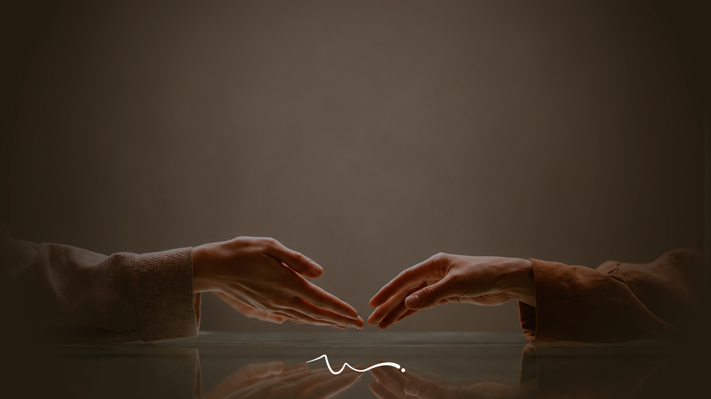
Overview & Goals
Preventive Mental Wellbeing
기업과 임직원의 스트레스를 선제적으로 관리하는 B2B 멘탈 웰빙 AI 서비스 SINECT의 BI·BX를 구축하고,
기존 사후 상담 중심의 멘탈케어에서 벗어나 기술적 접근성과 심리적 안정감이 공존하는 예방 중심의
브랜드 경험을 설계한 프로젝트입니다.
Brand Story & Value
Better Work. Built on Three Values
직장인의 스트레스는 연속된 회의와 촉박한 일정, 반복되는 업무 속에서 점진적으로 쌓입니다.
Sinect는 AI를 일상적인 업무 환경에 자연스럽게 연결하여 스트레스가 심화되기 전에 관리하는
예방 중심의 멘탈 웰빙 경험을 제공합니다.
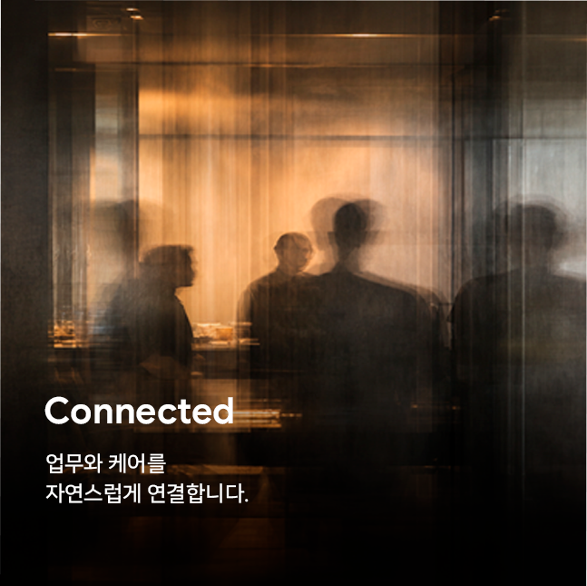
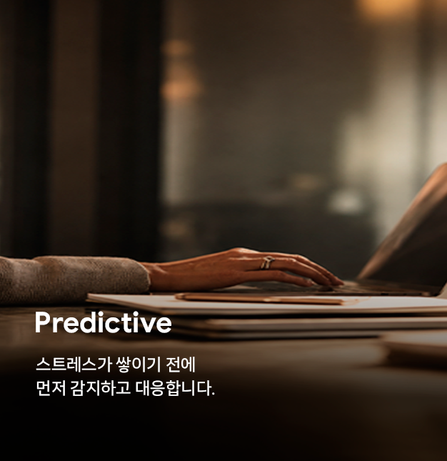
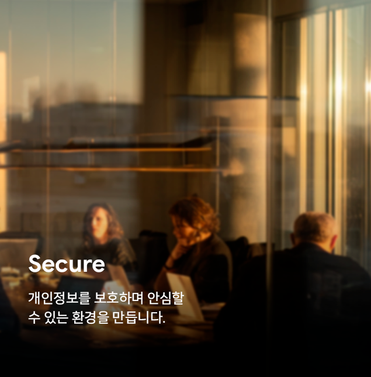
Logo System
Sinect는 Signal과 Connect의 의미를 담아, 업무 속 스트레스 신호를 감지하고 케어로 연결합니다.
파동형 로고는 신호의 흐름과 선제적 연결을 상징합니다.
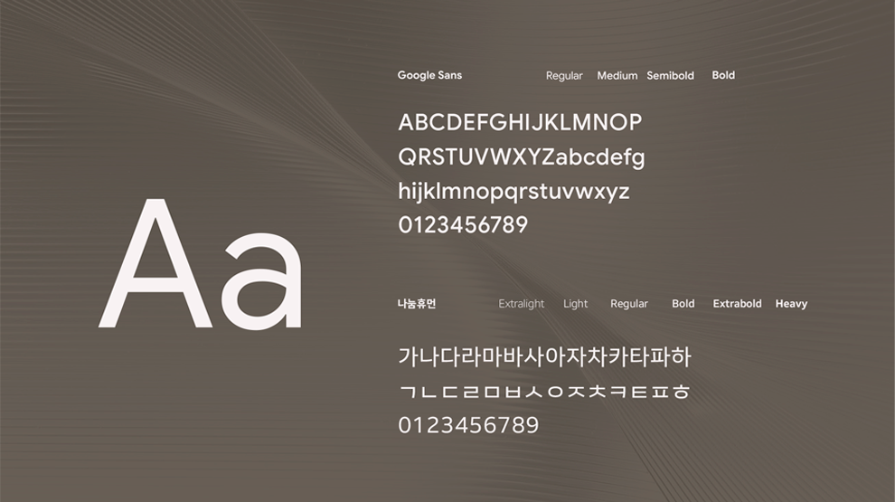
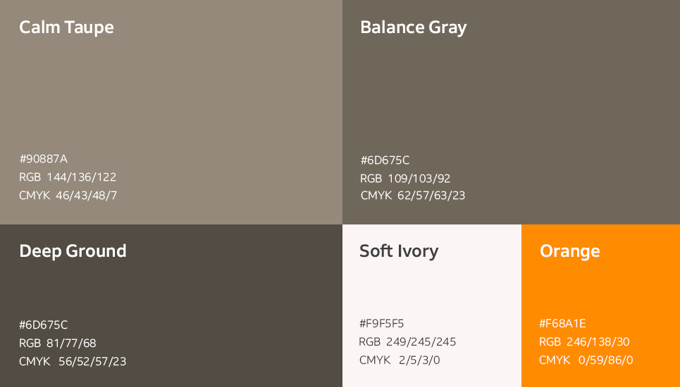
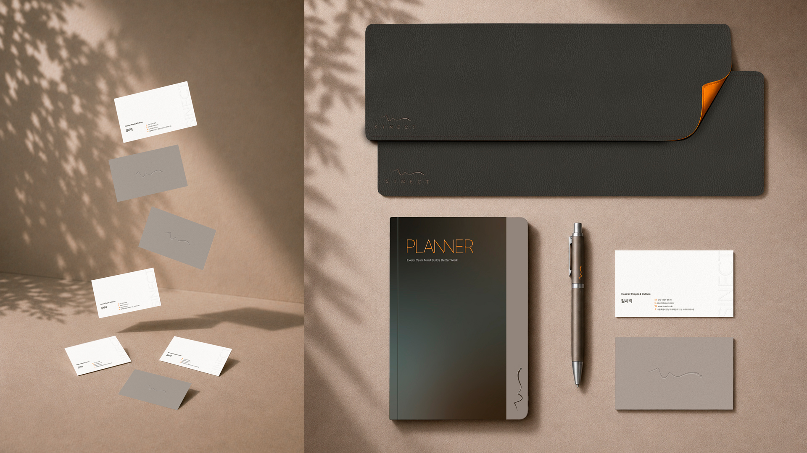
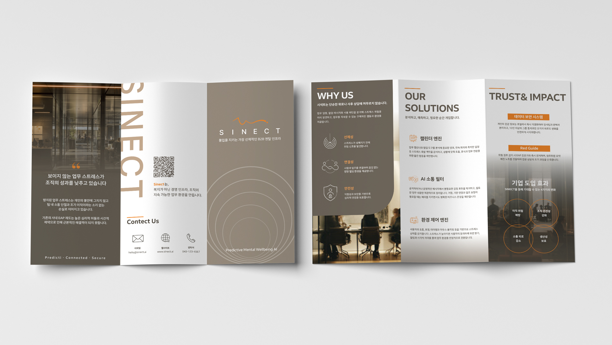
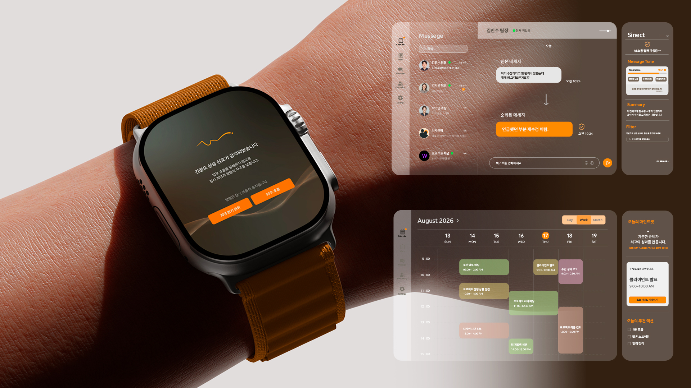
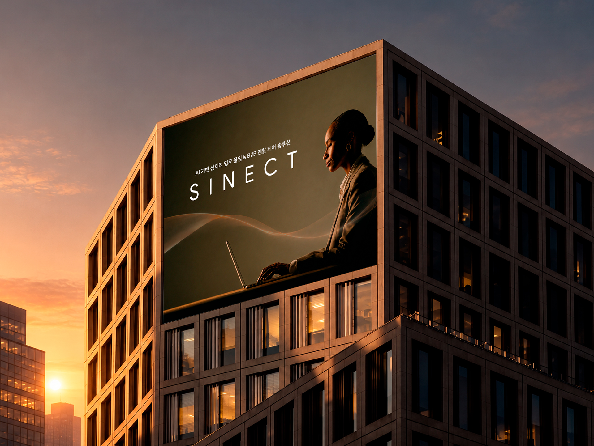